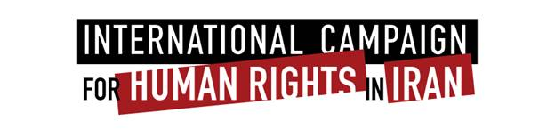

پذيرش > کمپین در بند > مریم مالک > بازداشت مریم مالک از اعضای کمپین یک میلیون امضا به اتهامات واهی

 بازداشت مریم مالک از اعضای کمپین یک میلیون امضا به اتهامات واهی بازداشت مریم مالک از اعضای کمپین یک میلیون امضا به اتهامات واهی
6 اردیبهشت 1388 - - نسخه قابل چاپ
5 اردیبهشت ماه 1388- کمپین بین المللی حقوق بشر امروز اعلام کرد که مریم مالک؛ از اعضای فعال کمپین یک میلیون امضا وگزارشگر مسائل حقوقی دادگاه های خانواده، پس از احضار به پلیس امنیت و انتقال به دادگاه انقلاب برای تفهیم اتهام، در 4 اردیبهشت بازداشت و در بازداشتگاه وزار بازجویی شد و سپس در 5 اردیبهشت وی به زندان اوین منتقل شد. دادیار امنیت شعبه 2 دادگاه انقلاب وی را به "تبلیغ علیه نظام" و "عضویت در کمپین یک میلیون امضا" متهم کرده و 20 میلیون تومان وثیقه تعیین کرده است که وی توانایی پرداخت چنین مبلغ سنگینی را ندارد. مالک در حال حاضر در زندان اوین محبوس است.

ارون رودز؛ سخنگوی کمپین بین المللی حقوق بشر در ایران در مورد بازداشت مریم مالک گفت: "این بازداشت در این شرایط انتخاباتی که فعالان حقوق زن درصدد بیان خواسته های بر حق خود در کنفرانس های عمومی هستند، تنها گویای آن است که دولت بدنبال ایجاد رعب و وحشت در میان این فعالان است." وی ادامه داد: "مقامات باید پاسخگو باشند که بر اساس کدام قانون، فعالیت های مریم در گزارش از دادگاه های خانواده و فعالیت برای جمع آوری امضا برای تغییر قوانین نابرابر، جرم است."
خانه مریم مالک روز دوم اردیبهشت ماه توسط سه نفر از ماموران پلیس امنیت تفتیش شده بود و احضاریه مریم به پلیس امنیت در همان روز به مریم داده شد. به نوشته سایت تغییر برای برابری نه تنها اتاق مریم و وسایل آن کاملا تفتیش شد بلکه کلیه وسایل منزل و وسایل شخصی اعضای خانواده اعم از برادر و پدر او مورد بازرسی قرار گرفت و حتی ماموران یخچال و اجاق گاز خانه را هم بازرسی کردند. ماموران پس از تفتیش، 16 سی دی، کتاب های حقوقی و قوانین، جزوات و نوشته ها، لپ تاپ، دفترچه های کمپین و برگه های امضا، سر رسیدهای شخصی و یک دستگاه ریسیور را با خود بردند.
مریم مالک؛ 26 ساله و دانشجو ازاعضای فعال کمپین یک میلیون امضا و نویسنده مقالات و گزارش های متعدد در باره خشونت های اعمال شده در حق زنان و بی عدالتی های اجتماعی و حقوقی در دادگاه های خانواده است. مریم پس از تفتیش خانه خود در روز دوم اردیبهشت ماه در مصاحبه ای با سایت تغییر برای برابری گفت: "آنها به جای انجام ماموریت با بیان مطالبی که بعضا توهین و افترا تلقی می شد موجب رعب و نگرانی در مادرم می شدند. آقای نجفی به مادرم گفت: حاج خانم اگر شما بدانید دخترت چکارها می کند سرش را می بری." مریم مالک در روز تفتیش خانه اش تازه از بیمارستان مرخص شده بود و در منزل در حال گذراندن دوران نقاهت بود.
به نوشته سایت تغییر برای برابری، مریم مالک از ساعت 8 و نیم صبح روز 5 اردیبهشت ماه به شعبه 14 پلیس امنیت مراجعه و پس از چندین ساعت بازجویی به دادگاه انقلاب و سپس به بازداشتگاه وزرا منتقل شد. مریم مالک در دیدار کوتاهی قبل از انتقال به بازداشتگاه وزرا به سایت تغییر برای برابری گفت: "اتهامات زیادی به من زنده اند که هیچکدام را قبول ندارم."
رودز در مورد اتهامات غیر واقعی به فعالان حقوق زن گفت:"سالهاست که مقامات امنیتی و قضایی که نمی توانند ثابت کنند که فعالیت مسالمت آمیز فعالان حقوق زن جرم است، در تلاشند که با وارد کردن اتهامات واهی، آنها را بازداشت و محاکمه کنند." وی اضافه کرد:"این شیوه همکاری نیروهای امنیتی و قضایی کارآیی مورد نظر مقامات امنیتی را از دست داده و بنظر نمی رسد که فعالان حقوق زن و خانواده های آنها دیگراز این اتهامات هراسی داشته باشند."
کمپین بین المللی حقوق بشر در ایران با ابراز نگرانی از امنیت جانی و سلامتی مریم مالک، از مقامات قضایی خواست که فورا مریم مالک را آزاد کنند و کسانی را که دستور چنین اقداماتی را در سیستم قضایی صادر و اجرا می کنند شناسایی و محاکمه کند.
کمپین بین المللی حقوق بشرهمچنین خواستار لغو کلیه احکام صادره علیه فعالان حقوق زن در ایران و مختومه اعلام کردن پرونده این فعالان است. این کمپین از مقامات قضایی می خواهد که عالیه اقدام دوست از فعالان حقوق زن را که فقط بخاطر شرکت در تجمع مسالمت آمیز سال 1385 برای تغییر حقوق نابرابر در میدان هفت تیر محاکمه و به سه سال و نیم زندان محکوم شده و هم اکنون در زندان اوین است، آزاد کند.
ارسال به
بالاترین
،
توییتر
،
فریندفید
،
فیسبوک
در همين بخش :
 بهاره هدایت را آزاد کنید؛ درخواست ۴۵۵ تن از فعالان زنان، دانشجویی واجتماعی از قوه قضاییه بهاره هدایت را آزاد کنید؛ درخواست ۴۵۵ تن از فعالان زنان، دانشجویی واجتماعی از قوه قضاییه
بیانیه بیش از ۱۵۰ تن از مدافعان حقوق بشر بین المللی برای آزادی بهاره هدایت و مریم شفیع پور
ششمین روز از کمپین «ده روز با بهاره هدایت» با عنوان «روز سلامت»
پیام ضیا نبوی و مجید دری از زندان کارون اهواز به کمپین«ده روز با بهاره هدایت»
روز پنجم از کمپین ده روز با بهاره هدایت:« بهاره، یک فرزند و یک خواهر است»
ديگر بخش ها :
طرح یک میلیون امضا
|
مقالات
|
سایت نوشته ها
|
اخبار
|
گزارش كمپين
|
گفت و گو
|
علیه سکوت
|
كوچه به كوچه
|
نامه های شما
|
گزارش ویژه
|
گفتگو با اعضا
|
ویژه سالگرد کمپین
|
تصویر برابری
|
دل آرام علی
|
تریبون
|
مقالات
|
تاریخ شفاهی
|
خارج از چارچوب
|
کتابخانه
|
درباره کمپین
|
کمپین در شهرها
|
کمپین در بند
|
صدای تغییر
|
ویژه 22 خرداد
|
لایحه حمایت از خانواده
|
گالری
|
عشا مومنی
|
امیر یعقوبعلی
|
خدیجه مقدم
|
راحله عسگری زاده و نسیم خسروی
|
پروین اردلان،جلوه جواهری، مریم حسین خواه، ناهید کشاورز
|
زینب پیغمبرزاده
|
سعیده امین، سارا ایمانیان، محبوبه حسین زاده، ناهید کشاورز و همایون نامی
|
احترام شادفر
|
نسیم سرابندی زاده،فاطمه دهدشتی
|
وبلاگ مهمان
|
پرونده خرم آباد
|
دستگیری ها
|
مریم مالک
|
پرستو اللهیاری
|
مهرنوش اعتمادی
|
سمیه رشیدی
|
Other Languages
|
همراهان
|
«فراخوان کمپین ده روز با بهاره هدایت»
| English
|